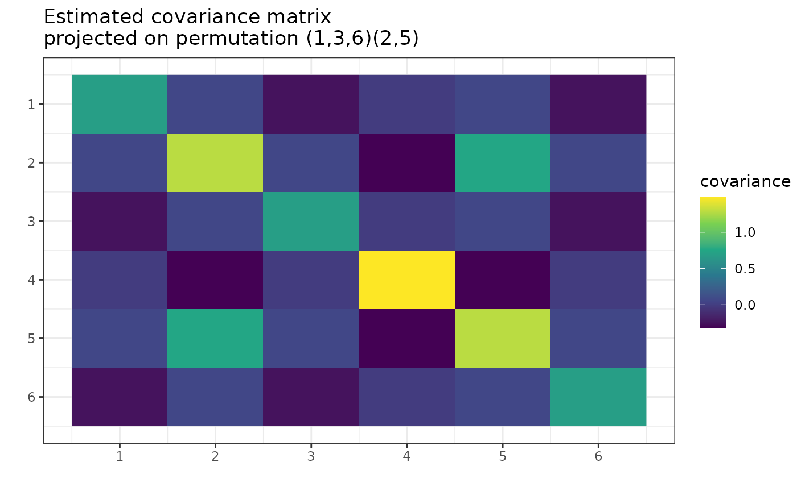
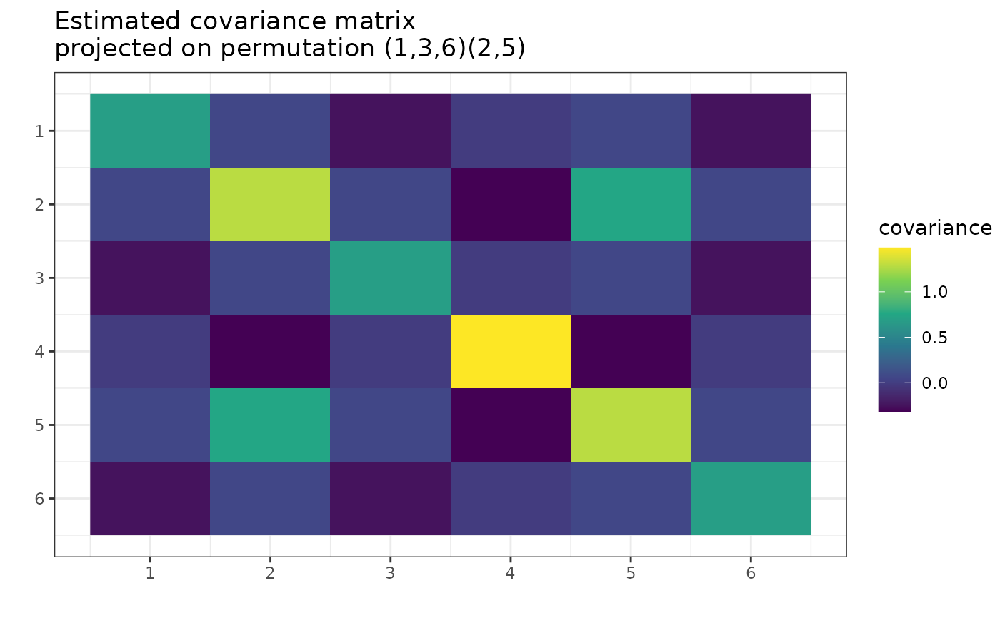

After the MAP permutation was found with find_MAP(),
use this permutation to approximate the covariance matrix
with larger statistical confidence.
Arguments
- S
A square matrix to be projected. The covariance estimator. (See the same parameter in
gips()function).- perm
A permutation. Generator of a permutation group. Either of a
gips_permor apermutations::cycleclass.- precomputed_equal_indices
This parameter is for internal use only.
Value
Returns the matrix S projected on the space of symmetrical matrices invariant
by a cyclic group generated by perm. See Details for more.
Details
Project matrix on the space of symmetrical matrices invariant
by a cyclic group generated by perm.
This implements the formal
Definition 3 from references.
When S is the sample covariance matrix (output of cov() function, see
examples), then S is the unbiased estimator of the covariance matrix.
However, the maximum likelihood estimator of the covariance matrix is
S*(n-1)/(n), unless n < p, when the
maximum likelihood estimator does not exist. For more information, see
Wikipedia - Estimation of covariance matrices.
The maximum likelihood estimator differs when one knows the covariance matrix is invariant under some permutation. This estimator will not only be symmetric but also have some values repeated (see examples and Corollary 12 from references).
The estimator will be invariant under the given permutation. Also, it
will need fewer observations for the maximum likelihood estimator to
exist (see Project Matrix - Equation (6) section in
vignette("Theory", package = "gips") or in its
pkgdown page).
For some permutations, even \(n = 2\) could be enough.
The minimal number of observations needed are named n0 and
can be calculated by summary.gips().
For more details, see the Project Matrix - Equation (6)
section in vignette("Theory", package = "gips") or in its
pkgdown page.
See also
Project Matrix - Equation (6) section of
vignette("Theory", package = "gips")or its pkgdown page - A place to learn more about the math behind thegipspackage and see more examples ofproject_matrix().find_MAP()- The function that finds the Maximum A Posteriori (MAP) Estimator for a givengipsobject. After the MAP Estimator is found, the matrixScan be projected on this permutation, creating the MAP Estimator of the covariance matrix (see examples).gips_perm()- Constructor for thepermparameter.plot.gips()- Forplot(g, type = 'heatmap'), theproject_matrix()is called (see examples).summary.gips()- Can calculate then0, the minimal number of observations, so that the projected matrix will be the MAP estimator of the covariance matrix.
Examples
p <- 6
gperm <- gips_perm(permutations::as.word(c(4, 3, 2, 1, 5)), p) # permutation (1,4)(2,3)(5)(6)
number_of_observations <- 10
X <- matrix(rnorm(p * number_of_observations), number_of_observations, p)
S <- cov(X)
projected_S <- project_matrix(S, perm = gperm)
projected_S
#> [,1] [,2] [,3] [,4] [,5] [,6]
#> [1,] 1.55898174 0.52114544 -0.31263652 -0.78133376 -0.15860632 0.02789638
#> [2,] 0.52114544 0.90995989 -0.51440557 -0.31263652 -0.07457191 0.11438691
#> [3,] -0.31263652 -0.51440557 0.90995989 0.52114544 -0.07457191 0.11438691
#> [4,] -0.78133376 -0.31263652 0.52114544 1.55898174 -0.15860632 0.02789638
#> [5,] -0.15860632 -0.07457191 -0.07457191 -0.15860632 0.77343402 -0.22971616
#> [6,] 0.02789638 0.11438691 0.11438691 0.02789638 -0.22971616 0.69068423
# The value in [1,1] is the same as in [4,4]; also, [2,2] and [3,3];
# also [1,2] and [4,3]; also, [1,5] and [4,5]; and so on
# Plot the projected matrix:
g <- gips(S, number_of_observations, perm = gperm)
plot(g, type = "heatmap")
 # Find the MAP Estimator
g_MAP <- find_MAP(g, max_iter = 10, show_progress_bar = FALSE, optimizer = "Metropolis_Hastings")
S_MAP <- project_matrix(S, perm = g_MAP[[1]])
S_MAP
#> [,1] [,2] [,3] [,4] [,5] [,6]
#> [1,] 1.0670003 0.2693836 -0.3388324 -0.3150053 -0.3150053 0.2693836
#> [2,] 0.2693836 1.0670003 -0.3150053 -0.3150053 -0.3388324 0.2693836
#> [3,] -0.3388324 -0.3150053 1.0670003 0.2693836 0.2693836 -0.3150053
#> [4,] -0.3150053 -0.3150053 0.2693836 1.0670003 0.2693836 -0.3388324
#> [5,] -0.3150053 -0.3388324 0.2693836 0.2693836 1.0670003 -0.3150053
#> [6,] 0.2693836 0.2693836 -0.3150053 -0.3388324 -0.3150053 1.0670003
plot(g_MAP, type = "heatmap")

# Find the MAP Estimator
g_MAP <- find_MAP(g, max_iter = 10, show_progress_bar = FALSE, optimizer = "Metropolis_Hastings")
S_MAP <- project_matrix(S, perm = g_MAP[[1]])
S_MAP
#> [,1] [,2] [,3] [,4] [,5] [,6]
#> [1,] 1.0670003 0.2693836 -0.3388324 -0.3150053 -0.3150053 0.2693836
#> [2,] 0.2693836 1.0670003 -0.3150053 -0.3150053 -0.3388324 0.2693836
#> [3,] -0.3388324 -0.3150053 1.0670003 0.2693836 0.2693836 -0.3150053
#> [4,] -0.3150053 -0.3150053 0.2693836 1.0670003 0.2693836 -0.3388324
#> [5,] -0.3150053 -0.3388324 0.2693836 0.2693836 1.0670003 -0.3150053
#> [6,] 0.2693836 0.2693836 -0.3150053 -0.3388324 -0.3150053 1.0670003
plot(g_MAP, type = "heatmap")
